k-Day 104｜好客？
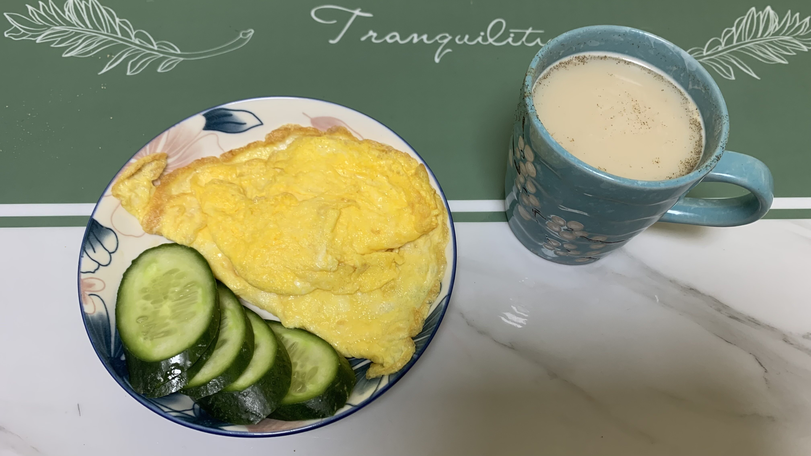
除了花五千元到城市衛生間洗澡之外，昨天一整天都待在房間裡。也許是看我兩天都沒下樓買飯吃，晚上十點多餐廳的員工端了一盤雞蛋黃瓜上樓敲門。
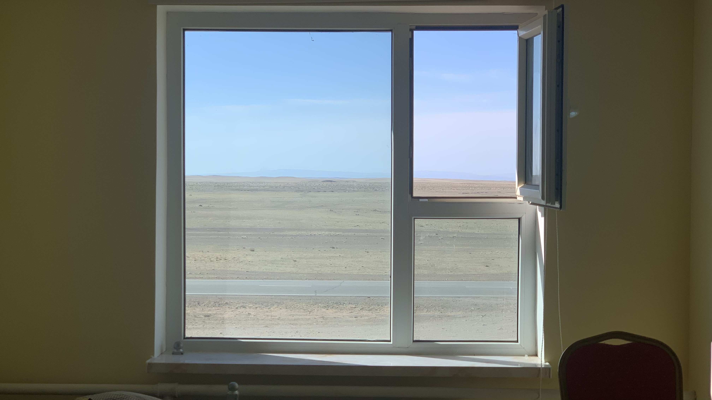
起床後匆匆收拾行李，站在恢復潔淨的房間中央看著窗外，隱隱有種恐懼感。早上短暫兩小時的順風，接下來一整週將會是橘紅轉成紅色的逆風。
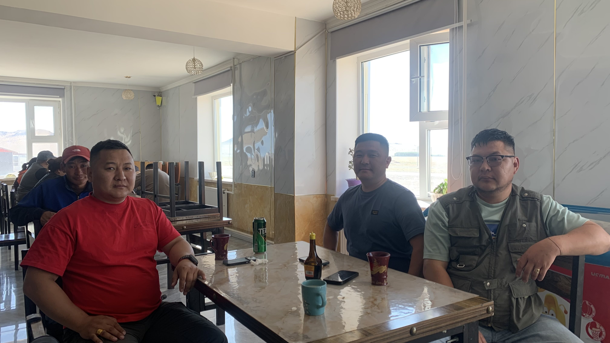
將二十三號連同行李搬到門口，背後有個聲音用英文大喊：「你從哪裡過來的？」
「日本。」我回頭大聲回答。
「要騎到哪裡？」
「巴黎，法國。」
「你會說法文？」對方突然用法文問我。
「誒！！！為什麼？？？！！！」在蒙古南邊的小鎮突然被發音標準的法文問話，對方還是個蒙古臉，無以名狀的思鄉情懷混雜著熟悉又異質的心情，捏著二十三號的把手，頓時不知該不該跨上車。
「你也會說法文？我在法國做生意，進來跟我們一起吃飯吧？」蒙古大哥用眼神指了站在旁邊的兩位大哥。
三位是一起做生意的朋友，從烏蘭巴托開車去阿爾泰旅行，剛好路過這個城鎮。
左邊紅衣服的大哥會說中文、中間藍衣服的大哥會說法文、俄文，右邊穿背心的大哥在韓國五年，會說韓文。
昨天端了雞蛋黃瓜給我的餐廳員工從廚房窗口看到我，欣慰的眼神彷彿說著：「終於可以讓你嚐嚐我們店裡的招牌美味。」大概率只是我的幻想，她只是在我被帶進餐廳時看了我一眼，並朝著我的方向點了點頭。
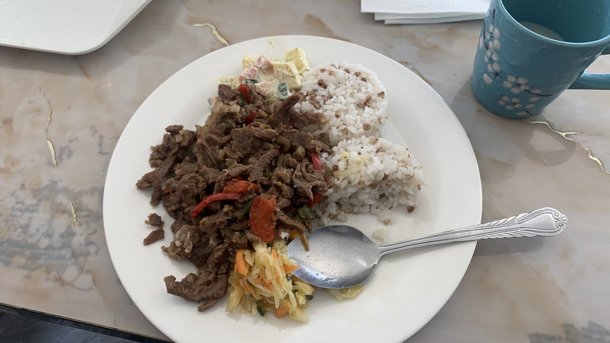
牛肉飯相當好吃，席間大哥們驕傲地向餐廳內其他好奇的客人說明我的旅程。
好不容易出現可以溝通的對象，我抓到空擋問了三人：「你們覺得蒙古人的精神是什麼？」
然而翻譯軟體出現的精神這個字卻無法精確以蒙語表達，於是換句話說：「你們覺得蒙古的文化和其他地方有何不同？」
「蒙古以遊牧文化和好客著稱。」說韓文的大哥回答。
關於好客這個說法，我暫且放著，出門時幫大哥們和二十三號拍了合照。
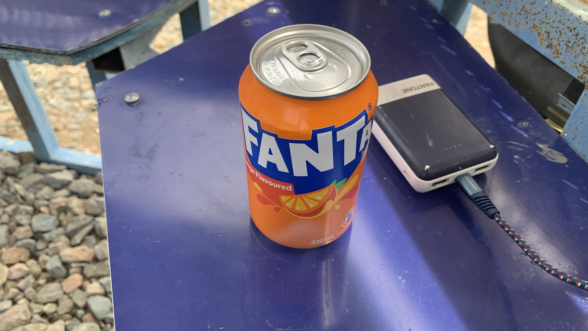
時間已經不早，抓緊最後一小時的順風往西邊前進。途中完全不敢休息，直到抵達第一個休息涼亭後，將二十三號靠在柱子上，打開早上大哥們給的橘子汽水慶祝。
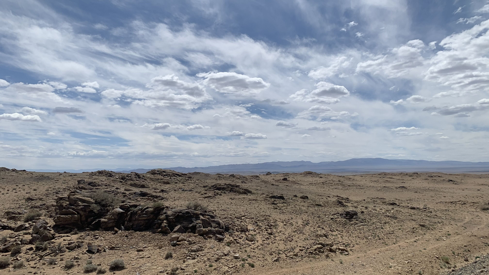
沒敢坐太久，在餐廳買了蘿蔔汁和水、飲料，又繼續趕路。一直都是這樣荒涼的景色，等過了阿爾泰之後人煙會更稀少。
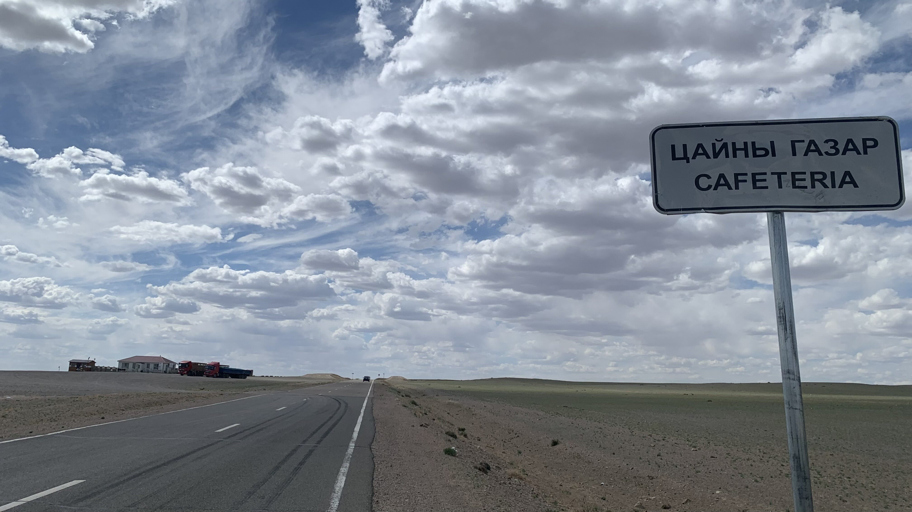
下午出現一間地圖上沒有標記的咖啡廳，院子和圍籬看來很乾淨。
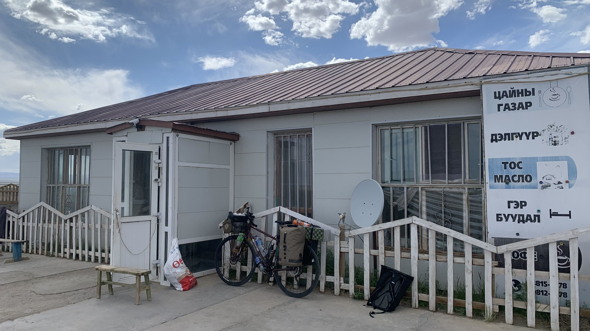
進門點了一杯咖啡，老闆拿出咖啡豆、鮮奶，做了一杯拿鐵，7000元。我接過真正的咖啡，走回院子，靠在圍籬上喝著咖啡發呆。
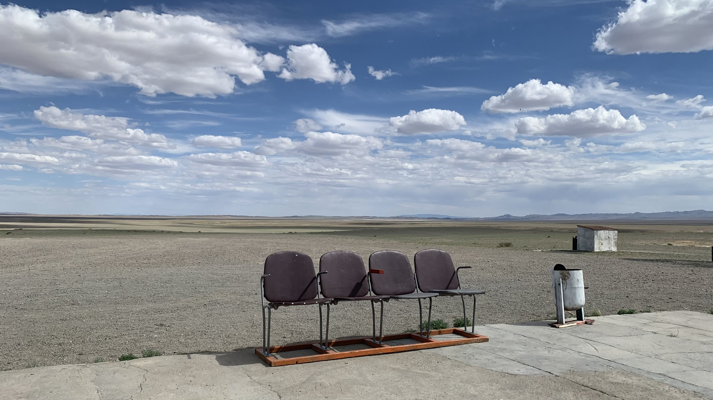
一整天都在荒野中流汗，此刻眼前出現的這排椅子顯得相當突兀。什麼樣的情況下，哪個人認為有必要搬一排漂亮的椅子放在曠野中？
天上的雲好白，天空好藍。好熱。
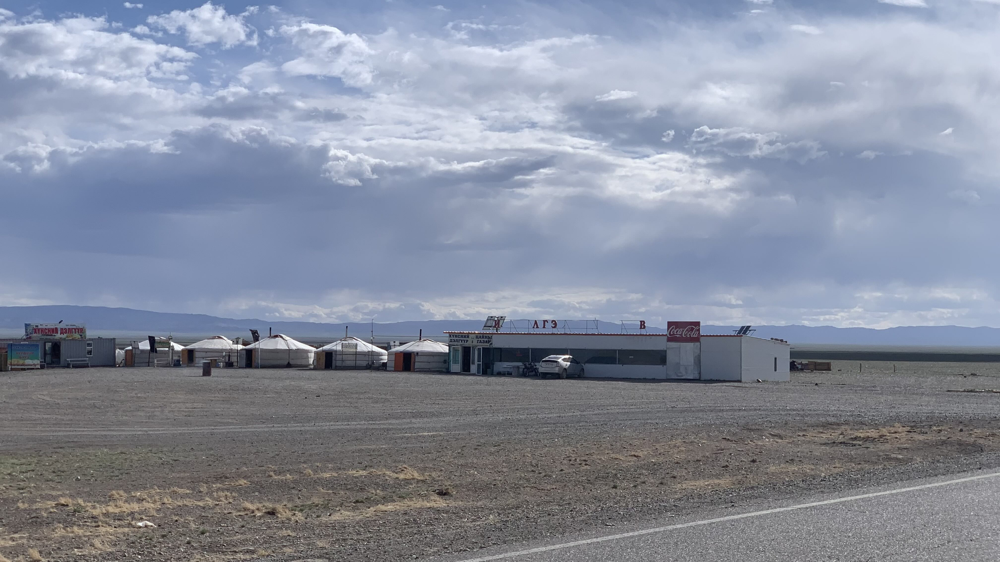
風越來越大，喝完咖啡後朝著今天可能的露宿地點前進。騎車時不敢抬頭看，眼角餘光掃過的遠處不斷捲起一條一條的黃沙小龍卷。
地圖上有人標記了一間餐廳，希望他們可以讓我靠在牆角扎營。
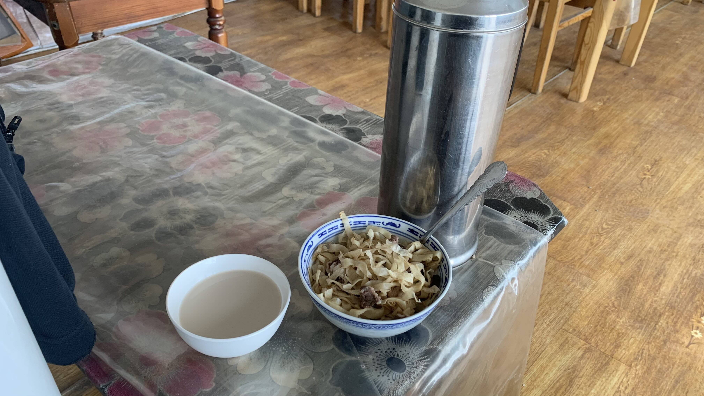
當然還是先買了一瓶罐裝咖啡和熱帶水果調味汁，坐在門口觀察老闆們的氣場。
還沒開口詢問，老闆夫婦叫我進餐廳裡坐著，並端來一整壺奶茶和一碗羊肉麵。從昨晚至今一直被餵食，誰來告訴我現在是什麼情況？
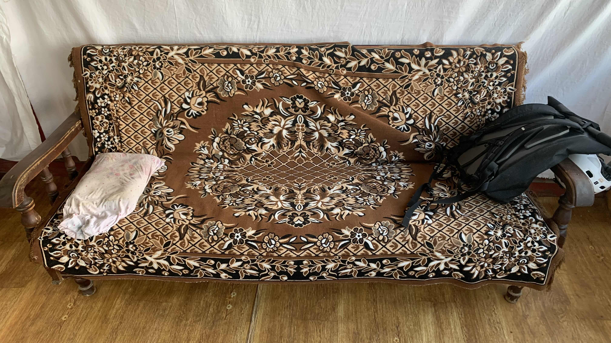
正當疑惑之際，老闆看到我吃飽了，拿出一個小枕頭，放在椅子上跟我說可以躺著睡覺。
小枕頭和昨晚旅店躺的是同樣的材質，倒臥在沙發上，無法停止腦中的疑問，究竟發生什麼事？為什麼就這樣躺在這裡了？
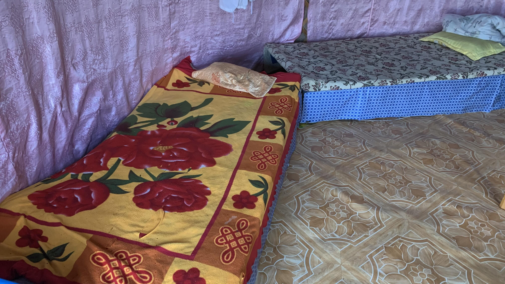
不久後來了一批客人，老闆看我從沙發上坐起來，先是把我叫到隔壁他們自住的蒙古包，同樣鋪上一顆小枕頭。
見我沒有要躺下的意思，問我要不要看電視。我搖搖手說不用，夫婦倆討論了一下，又把我帶到隔壁給客人住宿的帳篷。
想必我的表情十分慌亂，他用讓人放心的表情和語氣說：「這裡是我的，你可以睡在這裡。」
究竟是為什麼呢？
今日花費： 水+蘋果茶+蘿蔔汁17000、水 4000、咖啡 7000、水+咖啡+果汁 8500元